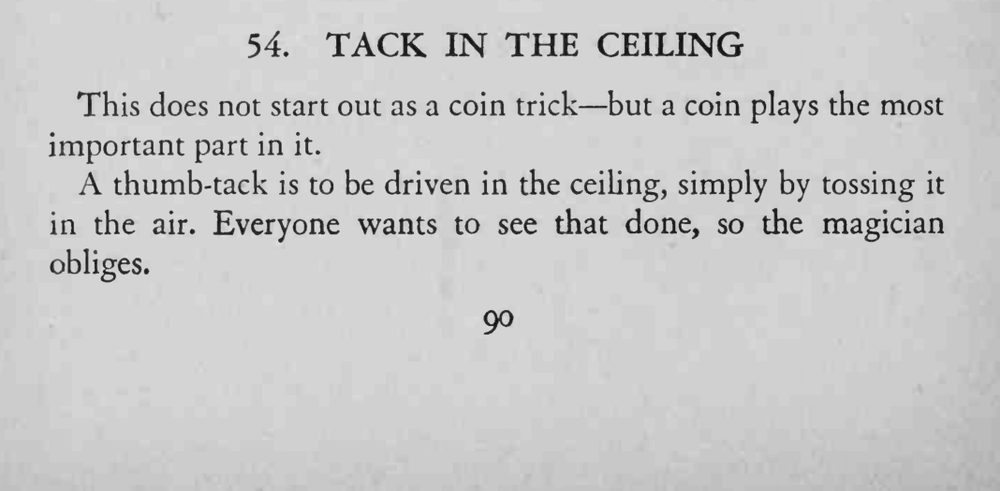
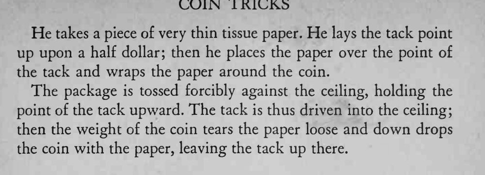

图钉被随手往天花板上一扔，竟稳稳钉进了天花板。
抛掷要直上直下，钉尖必须朝上，棉纸要薄到能被硬币坠破。


This does not start out as a coin trick but a coin plays the most important part in it. A thumb-tack is to be driven in the ceiling, simply by tossing it in the air. Everyone wants to see that done, so the magician obliges. He takes a piece of very thin tissue paper. He lays the tack point up upon a half dollar; then he places the paper over the point of the tack and wraps the paper around the coin. The package is tossed forcibly against the ceiling, holding the point of the tack upward. The tack is thus driven into the ceiling; then the weight of the coin tears the paper loose and down drops the coin with the paper, leaving the tack up there.